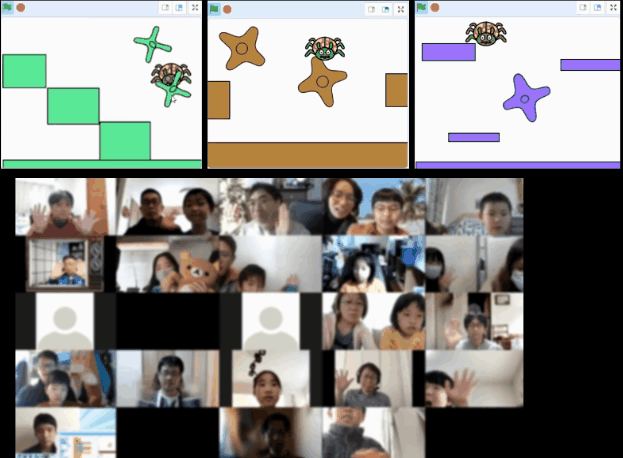
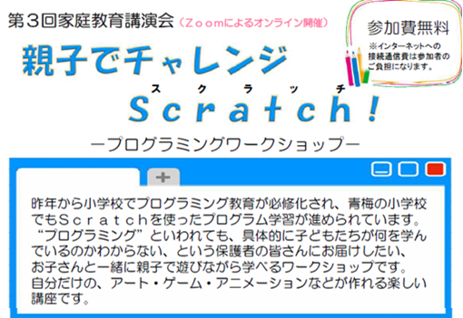

2021-03-14
小学2年生から5年生までの18家族20名以上の親子が参加してくれました。親を加えると40名近くなるのかな。参加者の半分以上はScratch未経験との事なので、みんなで同じ「クモのアスレチック」を制作することを体験しました。「クモのアスレチック」は、少ないプログラム（少ないブロック数）だけど、アート、アニメ、ゲームの３つの要素が詰まっています。同じプログラムなんだけど、子どもたちが作った作品はそれぞれの異なる色やレイアウトになりましたね。

CoderDojo青梅は、2020年後半に立ち上げて11月～12月まで募集をするも参加者ゼロ。1月から「NPO法人青梅こども未来」のみなさまのイベントに参加させていただき、今回は青梅市教育委員会主催の家庭教育講演会としてScratchプログラミング・ワークショップを開催させていただきました。市内の学校にチラシを配って頂けたので定員20名を大幅に超過した35組の応募あり。定員超過者には申し訳ないのですが4月以降のイベントにご参加ください。とても多くのご家族に参加いただき、様々なPC環境で操作などのトラブルが少なからず有ったことは、今後の案内に改善いたします。人数が多かったので、Zoomの画面に収まらず２画面に渡って、とっても賑やかで楽しいイベントになりました。

まだ操作がよく分からないとか、もっと色んなことをやってみたいとか、メンターの作品みたいのを作りたいという子どもたちはぜひ４月以降のイベントにもご参加ください。それまでは、メンターが作成した凄い作品をScratchスタジオで共有しているので↓アクセスして遊んでね。